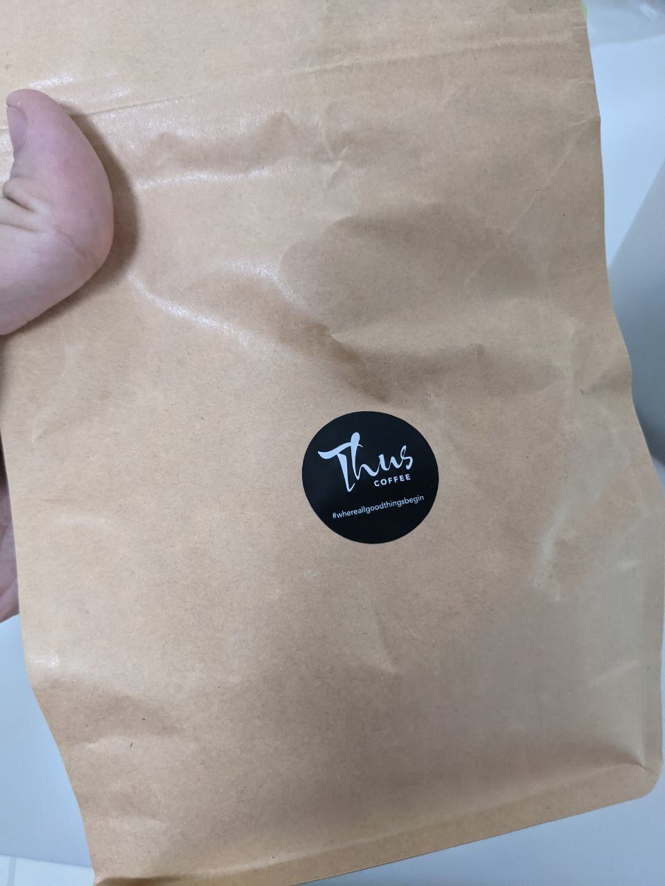
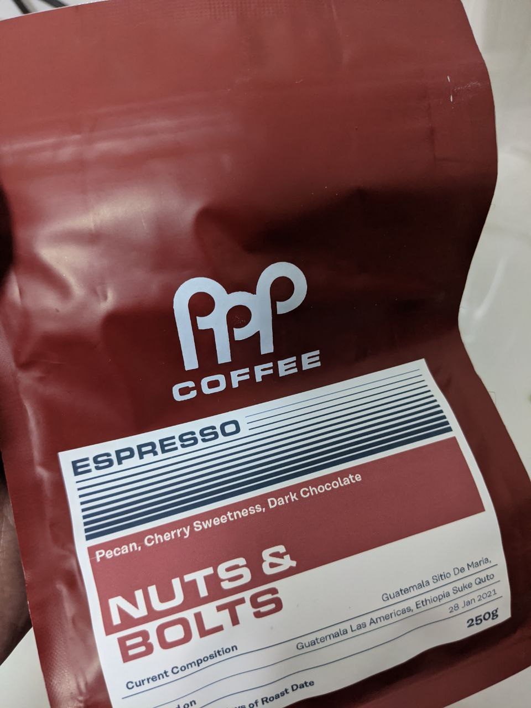
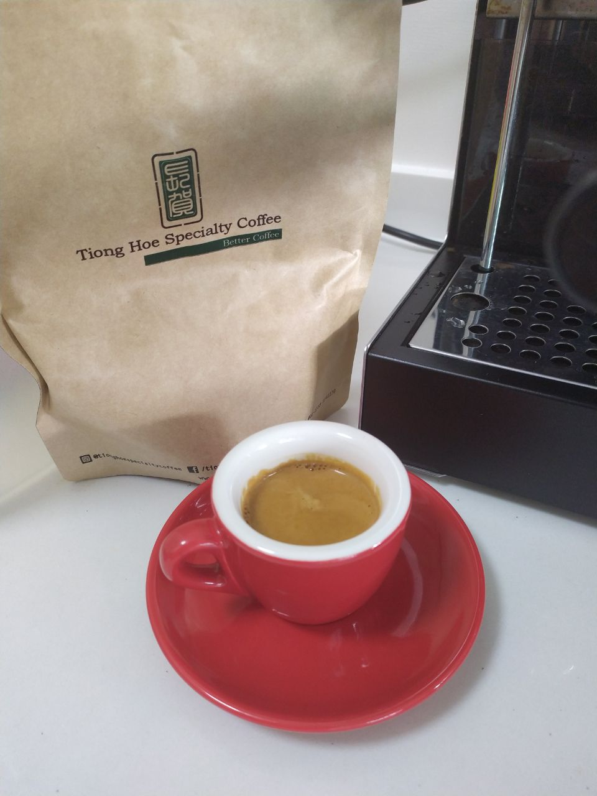

Coffee Bean Reviews
I don’t have sensitive taste buds. You know how coffee beans usually list their tasting notes on the package? I can barely taste those. So these reviews are really just me.
I’m ranking these from 1-5. And I’m always ranking them commensurate with their prices.
Thus Coffee
Star Vista | 250g | $15 | espresso | May 2021
- The barista went under the counter and poured out the beans from a giant bucket into a bag, then slapped a sticker on it.
- So the low quality shouldn’t be a surprise - beans stored like that can’t possibly stay good for very long.
- I gave this place a pity try since the other nearby cafes were all out of beans, just before the Circuit Breaker.
- 2/5. Actually tastes ok, but $15 is pricey for beans of this quality.

PPP
Nuts & Bolts
Jalan Besar | 250g | $16 | espresso | 2021
- Sweet, chocolatey.
- 4/5. Not bad.

Jimmy Monkey
One-North | 250g | $16 | espresso | 2021
- Oily, really oily crema. The beans shine. Pretty nutty, chocolatey.
- Side note: I’ve been buying beans from Jimmy Monkey since 2013, but they don’t roast them there anymore.
- 4/5. So far, best value for money.

Tiong Hoe Speciality Coffee
Jet Black
Tiong Bahru | 250g | $16 | espresso | 2020
- Caramel, hazelnut. Not bad at all.
- Somehow, all beans from TH have worked pretty well with my machine.
- 4/5. I gotta try the other flavors soon.

Paradise
Mr Brownstone
Beauty World | 250g | $18 | espresso | 2020
- Meh, not very good.
- I bought mine from Flag White at Beauty World but I’ve seen it sold in other cafes too.
- 2/5. Not worth the price.

PPP
Terra Firma
Jalan Besar | 250g | $18 | espresso | 2020
- Tastes like berries ’n shit.
- 3/5. Meh
~

PPP
Uraga Tome
Jalan Besar | 250g | $18 | pour-over | 2020
- Legitimately tasted ginger and orange. Not too overpowering, but just enough to identify it. Doesn’t taste like any other pour-over I’ve ever had.
- Really amazing aroma. Light ginger scent.
- 5/5, but in general I prefer espressos.